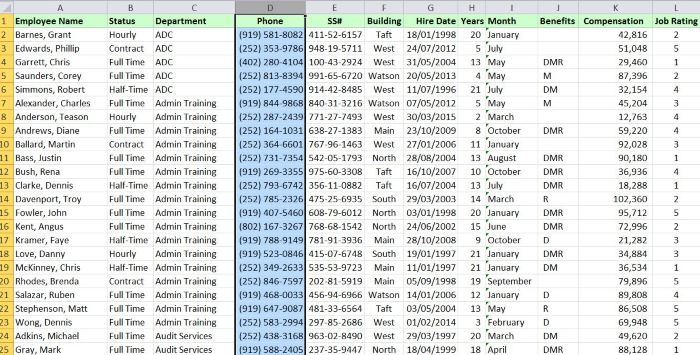
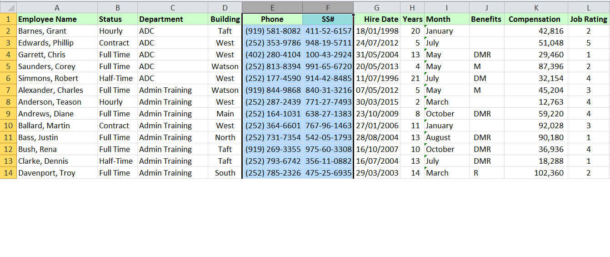

Cleaning data in Excel
Data cleaning
Cleansing is an important activity for preparing data for analysis. It's a way to maximise a data set's accuracy without necessarily deleting information.
Column and Row Re-arranging
- From the zip file stats_clean.zip, download Ch-01 - Open Move Data tab
Rearrange the order of the column, e.g. phone number next to department. Rather than inserting a new column, do this in a single action
- Simply select, in this case, the entire column, F, point to the left edge, arrow changes to a four-way arrow.
- Hold down the shift key and with left mouse button, drag that left edge leftward to the left of the SS# column.

The same can be done with copying multiple columns, highlight column “Phone” and “SS#”, hold down shift key, using the four-way arrow, drag the 2 columns to the column after “Building”, when you see the see the I-beam indicator, let the mouse go in that positio2.

- Staying in the same workbook - open worksheet, ‘Regional’. We can move rows in this example:
- After looking at the data for awhile you will recognise the need to move rows to suit the data. Row three is about sales, then expenses, then profits. Down in row 9, we're measuring the percent of sales change, but for some reason we've got profits here and expenses here, and this is not quite in-sync with what we see up above. So, in this case, we might want to move the entire row. In other words, but the expenses between sales and profits. Click row 11, and drag upward.

- Moving this row may affect the data across – ‘Sales person’

- Just undo that last action.
- This time move only cells. Reduce width of cells in between so we can see the column for ‘Salesperson’. Try again, by just selecting the cells and dragging up the cells in row 11 A-I, hold down shift key and drag to the position row 10. This time it should not affect the ‘Salesperson’ column.
- Back to ‘MoveData’ worksheet for another technique. Following the same process of selecting a column F, point to edges for four-way arrow. This time when you drag it to the position of column D, click right button of mouse for a menu to appear. Choose ‘shift right and move’, SSN to column D.

Transpose
The transpose feature is easy to use, and highly recommended, as you work with data, helps to visualize how data might look differently – changing from column to row layout and vice versa. - In this worksheet called Transpose, there’s a list of important contacts within this organization, if these people need to be reached often, we need access to some information about them. Also the list will grow a little bit from time to time, so this layout is not suitable for extending. Categories will be added too so the list might also grow this way as well, but at some point, maybe the thought occurs, could this data have been entered better if we had put the employee name with the heading, and then employee names underneath it. - To allow the list to grow substantially more, than we're currently seeing, and to improve it so its more readable, we can transpose it. Highlight this data here and copy:

- Click in cell A7. Then transpose the version, CTRL ALT V, choose transpose from paste special menu. We're going to be flipping this, imagine a diagonal from the upper left to the lower right, rotating the data along the imaginary diagonal.


- We don't need to keep the old information, although sometimes you might want to compare it, make sure everything got copied. If you have formulas involved, we don't in this case, but if you do, they too get transposed as well.
- Task: Try out the column L for Salesperson – try paste special for different transpose of the data.
Sort
In the worksheet ExtraRows, we’ve got some valuable information here. Within each department, for example, ADC we see a list of information about the people who work in that department. And scrolling up and down you can see over in column A how the data is indented and every time we have a new department, we've got a new list with a new heading. That heading does repeat the information that we see to the right.
- If we wanted to print this and distribute it to people, we might hide column C, right click Hide.
- If you wanted to work with the data to create a pivot table and do some filtering the worksheet is not usable in its current form. Unhide column C.
- There are many rows with subtotals ADC, Admin training with empty cells. It would not be efficient to delete each row, there’s hundreds of them.
- To deal with this issue we could sort the data. Pick one of the columns where there’s empty information next to that. Sort based on any column except column A. Choose Department:
- Click in column C, choose the Sort button on Data ribbon:

Choose Sort by: Department in A to Z. Excel recognises ‘My data has headers’ so row 1 doesn’t get involved… Ok

- What happened to those titles, they’re down at the bottom. Ctrl End. The titles can be deleted or moved to an empty sheet.
- Now we can work with the data without concern about those headings. We can sort the data, we can filter the data, we can create a Pivot Table with this, we can perform other features as well without worrying about those embedded headings that we had.
Empty rows
- Open the EmptyRows tab next.
- In this data we have empty rows, which we need to be removed. We want to highlight all the data. Go to the end, Ctrl End, click in the very last cell, L764. To highlight to the top, hold down shift key and choose Ctrl Home on keyboard.
- Choose sort on data ribbon, sort

- Sort by Employee Name, A to Z. Excel picks up headers in our list, so make sure that’s checked ok.
- The data's been sorted. The empty rows are at the bottom and there's our contiguous list.

- We cleaned up our data, by getting rid of rows.
Replacing data at character level
This feature Find and Replace is very useful for replacing a digit or a letter or a word once a column is selected. You can replace a single character with zero, one or many characters. You can imagine all kinds or variations on how you could use this feature.
The following will show you the capabilities of using the Replace command:
- Download file for this exercise CH-02, open sheet Substitute
- We need to make a change in Column B. Company's restructuring it's HR categories, so hourly is no longer an option. Also, we want to change Half-Time to Part-Time.
- Select Column B, on the Home tab, the far right editing group, go to Find & Select, Replace.
- Replace that phrase Half-Time, it's got a dash in it, tab, Part-Time, and we went to Replace all of them

- It will tell us how many it has replaced, in this case 96.
- TASK: In Column H, try replacing D8 with ‘x’.
- There’s also a function called Replace, but it's not like the Replace command, and strangely enough even though those words are the same, there is another function that's very similar to Replace, but it's called Substitute. The Substitute function is like the Replace command, its no faster than the above. Here’s an example:

- The only time you might use it is if you wanted to state the replacing of a digit that’s appearing at the beginning or at a particular position, e.g. if we just wanted to replace the first ‘8’,see below:

- Putting in the ‘1’ for instance_num means you will replace all first 8’s with a ‘q’.
- In column K there are '* '. These are special characters , like the '?' in column M. The find and replace does not work with special characters unless you include a tilda, '~ ', see below:

- TASK: Try replacing the ‘?’ in column M with lowercase ‘x’.
- In column ‘O’ every time we see G and Y, we want to replace it and everything including the characters between them, so cells have 2 characters between them, some have 5.
- We are going to use the wildcard symbol to represent the characters between G and Y. Replace G…Y with ‘x’. See below:

- The Replace function, works with data differently. The Replace function is unlike the Replace command. The Replace function is based on location or position.
- Open worksheet Replace.
- We've got some code numbers in column B. Some codes are positional, meaning that maybe the third character has to do with a color of an item, the fourth character might have to do with the year that it was made. These could have something to do with size, location, any number of different things. We need to make some changes, see the example below how replace function works:


- We can use this replace to replace 3 characters instead of 2. There’s lots of variations on this.
- TASK: Try replacing the second position characters with nothing?
Removing quotes
- Open the ‘quotes’ worksheet.
- Sometimes when you get data from another source, you might see numbers that have a single quote in front of them. Any number of obscure reasons for this, but when we deal with situations like this, sometimes it's confusing. You cannot format the cells with quotes unless you turn them into numbers.

- You might see green triangles. This is a particular Excel setting that you can turn on or off. File tab in the ribbon, down the left-hand side, Options. And under the Excel Options, go to Formulas. And at the bottom here, there are error checking rules. This is a bit of a misnomer. Not all of these are errors. There’s a box next to a choice here that says "Numbers formatted as text or preceded by an apostrophe."

- This can remove the green triangle warning.
- Otherwise, leave the green warning and check…

- In this example, choose convert it to a number, highlight all column A and choose.
Trailing minus
- Open worksheet, ‘Trailing minus’. To deal with minus
- Select column A, go to data ribbon, ‘Text to Columns’…

- Next, until step 3. Then choose ‘Advanced’.

- Trailing minus for negative numbers. Click ok and finish and they're gone. And the negative appears here. Can we use this now?

- Yes we can. Try = this value, plus one! The main idea here was of course, we got rid of those trailing minuses and turn them into minuses that Excel can work with. And the negative data appears the way we want it based on our own formatting.
Adjusting Date-based Data
Sometimes when you get information from other sources, the dates are put in in an unusual way and sometimes incomplete.
- Open CH-03 Workbook, tab/sheet: DateFormats
- There are some entries in column A, also in column C, that are similar, they're in reverse order. They've got month and year but not a day associated with them.
- In column E there’s all three of the date parts, but in a different layout. The key to converting these many times is a combination of using a function called DATE as displayed in this generic form here in cell B1 and also some of the text functions, like left and right, that allow us to extract data from the left side or right side of a cell. See the format below:

- The key to converting these many times is a combination of using a function called DATE as displayed in this generic form here in cell B1 and also some of the text functions, like left and right, that allow us to extract data from the left side or right side of a cell.

- In cell B2: =date ... link to the year out of cell A2. To access the four right-most characters, we use the function right. Cell A2 comma 4, meaning pull out those four right-most characters, that's the year.
- Then we need the month, that's the two left-most characters. We're in cell A2 again comma two. Now there's no day over there, so make it day one, first day of the month, comma one. Right parenthesis. We've got a date.
- Copy/autofill this down the column.
- We might also need something almost the same in column D. Since this formula we just created is based on the cell to its left, we can copy this formula we just created in column B. We’ve a different layout. So you can edit it as follows:

- In column E the date is formatted differently, it includes the 3 parts to the date. Notice J and K showing each month and sequence – this could be helpful here.
- To input a formula in F1 to format column E we could use a lookup table to somehow come up with the actual numbers. E.g., September is nine, the ninth month and so on. This is done inside out here. So in cell E2, how to get Sep to recognise as ‘9’.
- Use a function called Mid. ‘6’ represents the space where ‘S’ for Sep starts in cell E2. ‘3’ represents the 3 characters – ‘Sep’. Hit enter, that will give us ‘Sep’ in cell F2.

- To replace the ‘Sep’ with ‘9’, we use the Vlookup function. The purpose of the Vlookup is: I've got a value somewhere, in other words for Sep…I want to compare it with a table of data somewhere. That table in this example is over in columns J and K. See function format below:

- Start with: =VLOOKUP(MID(E2,6,3),J:K,2,FALSE) The ‘2’ means the second column which is ‘K’ and ‘FALSE’ means – choosing exact match. If all goes well, it should have ‘9’ as the answer. Convert this to Number – general format from home ribbon. Just to test this in column ‘F’, autofill down this column ‘F’ to see if it picked up the month as the numerical field:

- All that, to come up with a month!! To format the Date in column E – edit the formula as follows:

- At different times your going to have to go to these unusual lengths to achieve Date formatting:

- To clean up the columns, we won’t want the original column now that we have reformatted. To quickly copy, bring your mouse to any edge of column F, hold it, begin to move it to next column, click right button of mouse to choose option with copying.
Text to Column Dates
- Open sheet, Text to Column Dates
- View column A, C and E. Each have dates, but they’re in unusual formats. It can be difficult to identify which is year and month, especially in row 8 of column A. You have to figure out which is day, month and year. Brief look can help you identify this overall.
- Try this: Highlight column A, click on data ribbon, choose Text to Columns.
- Use wizard- Next and Next. Step 3 to column data format -

- There are 6 different variations of formatting of how date is formatted.
- Choose YDM as you notice in column A has year first and then finish.

- We’ve got dates, you could align it…
- Try column C and F.
- Column C. The day on left and year on right:

- Col E – year on left side. YMD finish.
Date Value and Time Value
- Open sheet, DateValue.
- Notice on the Home ribbon, you have different ways of dealing with date in the number section. You can format date – short date, long date. If column A was a date format, we could test it by typing in cell E2: =A2+1 . We would get that number in E2. Could it be formatted? Click on cell E2 and choose short date.

- Another way which is faster will clean up dates. The formula is called datevalue. If you’ve had a situation where you got dates that have somehow been treated as text or converted into text. That happens sometimes when you’re copying data through various interim software packages or sometimes moving between workbooks.
- Highlight column B2:b11, start typing =DATEVALUE (it automatically types in cell B2)

- You get this, it doesn’t look valid…

- From the home tab, number section, convert into a short date display. We now have dates that are workable…

- We don’t want the formulas here in column B to work with it. Highlight the cells in B, drag it into another column or move it back to column B on top of itself, right click and choose, “copy here as values only”

- Now, these are converted, we’ve got dates we can work with. So you could remove the original dates in column A.
Times
- Same thing can happen with times, in cell B13, could we add an hour to this? Add 1/24 of a day?

- It’s a number – go to the home ribbon again, number section, change to the time format…


- That’s workable.
- It could be faster to use timevalue function:

- Press control +enter, changes selected together at one time.
- Sometimes again in the copying of cells back and forth formats get copied. Highlight both and choose time from home ribbon.

- If those are not to your liking – the formats can be changed from format cells. AMPM without seconds or 24 hour style.

- Converting dates that have been entered as text or converted to text need to be cleaned so they’re suitable for working on, same situation with time we use either the function Date Value or Time Value to clean up that information.
Working with Number to Text Conversion Issues
Convert text data to values
Sometimes you get data from other sources, you don't know how they were displayed as text, or why they were converted. Half the time it's a mistake, or it wasn't done on purpose.
There are two techniques to deal with this, if Excel prompts you by indicating a green triangle you can simply select the conversion by highlighting the cells. The other method is pick an empty cell, and copy that and add it to the numbers that are text by way of paste special.
- Open Ch-04 Workbook, Sheet: Text to values
- You will notice green indicators on each cell.
- As mentioned before, in case you don’t see the green triangle, it could be that its disabled. Open Excel Options, Formulas, Error Checking Rules. See below “Numbers formatted as text or preceded by an apostrophe”. Enable this feature as the green triangle prompt is very useful when you want to convert the values.

- When you accept the options from the green triangle, highlight column B and convert from text to numbers.

- When you click in column E, notice the Home ribbon, number section. The numbers are formatted as text. If you click in cell E2 and try to add a dollar sign or a comma, it does not change.
- If you try to work with the values and click in cell F2 and type a formula = E2* 2. Notice the cell F2 format is accounting format, so you can work with these numbers. Add currency, comma etc.
The oddity about text formatting is that when you apply text formatting, when you apply later formats, it doesn't really remove the formatting. That sort of sounds like a contradiction. It can be confusing. How do we clean these up?
- Go to a blank cell, F3, choose copy.
- Highlight the column E2:E20 and choose paste special, Ctrl-Alt-V. We are copying a blank cell

- Choose Add (we’re adding what we’re copying – blank cell). The numbers will shift but nothing different to note.
- What you will notice is, if you click in cell E column and go to Home ribbon to change formatting, you can add commas and currency etc.
- We have converted these into standard numbers and removed the text formatting.
Add leading zeroes: Zip codes, other numerical codes and text codes
When you get data that should've had leading zeroes but doesn't, it poses some problems and some different issues occur. We need to clean up the data for multiple reasons on the following worksheet “Leading Zero’s”:
- Open tab/sheet – Leading Zero’s
- Column A - Someone entered zip codes here, maybe it was just essentially looking at a sheet of paper, typing an entry, pressing Enter, not looking up, and here that person typed 02299 in row 5, and 00766 in row 7. What happens to the leading zeroes? Well they're not there. These are in so-called general format, no special formatting was applied.

- A Special format could have been applied. Right click column A. format cells.

- Number tab, choose special under category. There’s 2 variations on zip codes. Try the first one, with 5 digits.

- Watch the entries in column A, they now have leading zero’s. That means when your typing these you don’t have to type the leading zero’s.
- Column C – these are ID numbers – somebody was typing these and typed leading zeroes but we don’t see them there. We want them to appear the way they appear in column E. How can this be fixed – there’s 2 ways.

- The first way to try is longer, its done by using the function TEXT.
- TEXT allows us to pick up numerical information, but we have to provide the form, we want the format to be 6 zero’s. Each zero stands for a numerical representation of characters.
- =text(C2, “000000”)
- Autofill down the column

- The other method: highlight column C – right click, format cells and go to custom

- This will only work if all our entries are numerical, as with the previous technique too.
- Off to the right, in column G. We want column G to look like column I. There is 9 characters.
- We need a function to put in as many zero’s as we need.
- Try this formula in cell H2: =Rept(9,4) We get value 9, repeated 4 times. If it’s a letter or symbol we must put in “” double quotes. What if we put in an unusual character, try: =Rept(“%”, 4)
- Remove the formula you tried out in cell H2. We want a 9 character representation here. You will need to begin by saying you want to put in a zero, but we’re not sure how many ties, so we need another function. How wide is the entry? Or how long is the entry?
- Ultimately we want nine characters, if cell G2 has 6, we need to repeat zero 3 times. We use a function call LEN (think of length)

- The REPT function says, let's repeat this character, how many times. The number nine minus the length of the entry already. What if it has nine? Look at the entry in row 5, in G5 we see an entry there, it has nine characters. What is nine minus this length of the cell? We put in the number zero, zero times. And will it work here without the double quote? When you work with numbers often you don't need to use the double quote. The & symbol allows us to join data from different locations, in this case G2.
- Copy down the column. They should be all 9 entries wide. In some cases with letters it doesn’t work, row 23. Letters are different. The main idea we’re able to reconstruct the numbers and leading zero’s.
- After creating the information the way we want it to appear, we can paste it back on top of the old data. We don’t want formulas, use right mouse button, drag up or down, let go of the mouse button and choose ‘Copy Here as Values Only’. Keep the results and you have the data looking the way you want it.

Cleaning up Text Data
Cleaning up text data does have the advantage of many different Excel functions called text functions
- Open Ch-05 Workbook, Sheet: Textfunctions
- Different techniques are used here for using Text functions. The main issue with this sheet is uppercase.
- Start with column A. The function is proper. Type the following in column B:

- Copy this down the column. All looks ok, except one exception row 4. “Mcd”. You might have to manually override this. There’s a flash fill feature that we will try later that will do this more efficiently.
- Column D – is different because it has space issues. E.g. row, 3, 5 and 8.
- To clean these up the function is TRIM. We will include PROPER as we need to sort the capitals.
- See the following:

- Ctrl key + enter (the active cell does not move downward)
- We dealt with the extra spaces in many of those entries, and we uncapitalized the letters
- Column G - we might want to simply capitalize the letters there. Use a function called upper. At the same time, we need to deal with spaces, if we use trim we get extra sp61e:

- Instead try the UPPER function and 2 other functions to pull the data together:

- Copy down.
- You can see a list of text functions listed at the far right that allow us to deal with data at the character level.
Two new functions: CONCAT and TEXTJOIN to combine data
If you're using Office 365 and you've installed upgrades that were introduced in 2016, you've got access to two new functions in Excel. One is called concat, the other one is called textjoin.
- Open sheet: CONCAT-TEXTJOIN
- To see if they are available to you, go to the formulas tab, and you should see them in the category called text. If your using standard Excel 2016, you will see instead concatenate.

- In column E – we would like to create a new ID comprised of these three cells, with the existing concatenate function, and you can use this even if you have installed the new functions.
- Using either concat or concatenate formulas, start typing concat and it appears in the list…

- Just to compare the 2 formulas. We will try the following:
- In F2, use a formula called formula text so that we have reference. We’re simply going to refer to this cell so we can display that actual formula over in F2.

- Back in E column we will try concat – in cell E3, try =concat(B3:D3) Instead of listing individually the range can be highlighted. If you need to remove the middle cell in the range you would remove ‘:’, type the following =concat(B3,D3)
- Across the sheet we will use the new function, one that you can only try if you have the upgrade to Excel 2016 or Office 365 version. We begin in in cell L we will concat column I, J, K. We want a space between each one:

- Copy these down the column
- In some cases were there are no initials in column J, we have spaces appearing between first and last name in our result in column L. This is where TEXTJOIN comes in.
- This new function, textjoin in column M, begins with delimiter, we want to pull this data together with spaces, double-quote, space, double-quote, comma, ignore empty text, so if there's an empty cell, as there is in column J from time to time here, we want to ignore it, and that option is true. Now you can either click true, and tab it into place, that's one option, then pick up the text we want to concat- the 3 cells I2:K2. This will pull together the data from those 3 cells, along with the space between them, but ignore cells that have empty text in them.

- Type TRUE to ignore empty cells

- Copy down column M
- Now see row 3 Karen Chambers, only 1 space between.
- Just display this in column N, using the formula, =FORMULATEXT(M2) so you can view the formula format in column M.
- To make the TEXTJOIN formula more efficient you can take the ‘TRUE’ out.
- Try choosing FALSE, where you did want to include empty cells, or type ‘0’. Immediately you can see the space back when you copy formula down. Just undo and go back to the True or space to deal with no spaces.
- In column E if we were to change the format in column E to include a “-“, see the difference between concatenate and textjoin format. TEXTJOIN is simply easier to create:

Combine data via concatenation
- Open sheet CombineNames
- In addition to using functions like CONCAT or CONCATENATE or Text Join to bring together information from different columns, you can also use a feature referred to as concatenation.
- In column D, we need to pull together the data from columns A, B, and C. And we can do this by using the ampersand symbol, that's the and symbol typically found above the number seven key on most keyboards. We want to bring together this data, and in a particular order. Notice there's a middle initial here. We might have some issues with that.
- Widen column D.

- Complete entry, Ctrl+enter
- Copy down the column
- There are trailing spaces in column D now

- So following the first name, that's the B2, instead of putting in a space, because sometimes we will have a middle initial and sometimes not, following this ampersand right here we're going to put in an If function to see if that cell C2 is blank. We’re also going to use a function called blank.

- Copy down the column, you should see the period, “.” after the initial every time.
- Like before, we want to throw away the formula but keep the results. Highlight column, drag any edge, left, right, until you bring it right back on to itself in column D, release the right mouse button, “copy here as Values only”.
- Off to the right, not exactly related to cleaning up data, but something you might want to work with numbers like this, e.g. in an invoice where you have a list of Unit Prices and you want to put in a calculation. The display you would like could be one in cell G5. Now, this is simply typed in, we don't want to be doing that all the time, but let's create this same look by using concatenation.
- A simple calculation to multiply the unit price by number is as follows: in cell G2, =E2* F2 To see that along with text, do the following:
- You can put “ “ quotes in for text. To add the currency you need the text function. The Text function says I've got some data, here it is here, it's a numerical bit of information, so let's display this according to a format. If you're familiar with formatting in Excel, the pound sign symbol, when used in other symbols, means suppress the display of leading zeroes. So let's say that sometimes these numbers could go into the tens of thousands, maybe even hundreds of thousands.
- We're putting in an entry here, three pound signs, comma, then two more, and let's say that all these numbers are going to be over a dollar, so we'll put in a zero right here. Possibly we could have some very small numbers here, that might be $8.75. This format is not exactly obvious at first, it will display the information such that if it were unusually large, we wouldn't have leading zeroes in front of it. So it takes this entry(E2* F2), converts it into text, but displays it in this kind of a format in the process.

- Copy it down to the next row:

- One more thing you might want to consider in this format is to put in a dollar sign, select both G2 and G3, press F2 to edit:

- What happens if the numbers are lower, if the total price is under $100. Change the number to 5 in cell f3. The entry over to the right, changes to $49.75 and if you changed the unit in F2 to 545

- Like before we could display this formula in the column beside in H.
- =FORMULATEXT(G2)

- We will edit the function in cell G3 to make it more efficient, is to replace the function TEXT with DOLLAR. We can get rid of the format that we had ### etc. See below:

- This has nothing to do, really, with cleaning up data, but it does show us how we can use that ampersand symbol, sometimes referred to as the concatenation symbol, to pull data together.
Split data into columns with the Text to Columns feature
The common problem with data that you get from other sources is too much information in the same column. Now, that's not always bad, and we have to take this on a case by case basis.
- Open sheet, Text to Columns
- In column A, we have some names, in some cases there could be a larger amount of text. We cannot sort this list by name in its current state because the names are in first name, last name order. We could, however, split these into separate columns, and then we could either rejoin them in reverse order, or maybe just leave them in separate columns, then we can sort our list by last name. Text to Columns usually begins with the idea that we probably will need an extra column, typically to the right. In this case, we're going to split these names. Notice that none of them have middle initials, they're all single names and we don't have any Mary Jo's or anything like that, multiple names, just first name, last name.
- Select column A, data tab – in the ribbon, choose Text to Columns, choose delimited, then next. The delimiter in this case, the characters that separates the names is space.

- Check out the preview to see… Click finish and see the data split.
- In column D it’s a little bit more problematic, some of the people have middle initials. So we've got at least two extra columns to the right, so that should work okay. But the way these are separated might be a little bit different here.
- Begin my using the “,” to split these in column D. It depends on what your looking for, we might have last name first, first name next, then initials…
- Select column D, data tab ribbon – text to columns, this time we use comma
- Check the preview, try comma and space together or space without comma to compare.

- Click finish.

- In column G, we have a bigger list of contact information. We cannot sort this in this state by state or zip code, so we’ll split these into different columns.
- Highlight G, Data ribbon, Text to Columns
- If we use space, it might look good at first, but some of those city names are multiple, like Wheat Ridge, San Francisco. Is there a North Las Vegas in there? But if we use space and comma both, it looks like we might have some problems. Let's take out space. Let's choose comma. we can't do everything at once at all times here, but it looks like comma will at least isolate the cities for us. So we're using comma this time, Finish


- Our list looks like this, our cities are isolated. Readjust the column width here, let's do the same thing all over again.
- Highlight H column, looks like we have a leading space. Ribbon – Text to Columns – Delimiters – choose space. See preview. Separated the state and zip.

- Now we have a blank column H. We can remove it or move over I and J on top of H.

- We can sort it by zip or state or possibly city first, then by state to get them in alphabetical order within each state. These techniques are really necessary at times.
Flash fill
Flash fill is a relatively new feature in Excel, introduced in Excel 2013. It is a valuable tool, and a great addition to any situation where you need to restructure data that's in columns
You'll find it on the Data tab in the Data Tools group, Flash Fill, it automatically fill in values.
- Open sheet Flashfill
- Look at the data in column A
- In Cell B2, If we wanted to have the name, Amy Ryan, formatted with the first letters of each name capitalized, and the order reversed, type in cell B2 “Ryan comma space Amy”.
- One of three different ways to use Flash Fill is to complete one entry, start the next one, starting typing the capital W, the first letter of the last name of the next person, capital W. Excel sees what your doing…

- You can see clearly what’s happening. Press enter to accept the entries.
- Notice a few things it did not do. Hyphenated names didn't work here. The B in O'Brien is not capitalized, that occurs later. Everything else seems to be okay. Excel is not yet programmed the first D in McDonald to be capitalized. But in other respects, this works very well.
It’s best to either have them in separate columns like D and E, or to have them in reverse order the way we see over in Column B. Column A is a huge disadvantage because we cannot sort the list by last name.
- In column F, cell F2, type Mark Baker, press Control + Enter, so the active cell doesn't move, and then slide up to the feature Flash Fill on the data ribbon, click it. Check out the hyphenated names – it worked perfectly, see row 11. Ted O’Brien in row 4 worked.
- Column H – this is similar to what we did in column A but this time we have issues. You can see the spaces in row 4 too many spaces between Hansen and Sheila. There are leading spaces there.
- In column I, start typing, Ryan, Amy. Use shortcut for flashfill, Ctrl+E
- The spaces are not being dealt with row 4. They are in row 15 with Cathy Watanuki, they are. So perhaps a little bit of unpredictability about how space issues. We're not sure what happens to trailing spaces. Is there one behind Marilyn Fier in row 5? If you check column I the trailing space was taken care of.
- Undo. Drag Mary Todd-Jones up to top of list H (before Ryan, Amy) Start typing Todd-Jones, Mary in I2:

- Press Ctrl+E or flashfill.
- The result is a disaster – see how it repeats names in an odd way.
- Undo, change the order.
- Drag Amy Ryan to top of the list.
- Retype the entry in I2, Ryan,Amy. Ctrl+Enter Flashfill
- In general it works well, but we shouldn’t have spaces.
- In column K- we should never see City, State Zip in same column. You cannot search for either of them attributes.
- Try the following, type in L, M, N:

- Click in Kenton, Ctrl+enter, flashfill, it picks up the cities. It's recognized that we've typed everything to the left of the comma, so it does pick up the two city names, like San Francisco, Colorado Springs.
- Flash fill column M and N. So we can get rid of column K
- Column Q- type in the state code CO. Now you recognize in the list to the left, everything is upper case. Will Excel read this as picking up the first two letters of the city name, or will it pick up the state code? If I complete this with Control + Enter, and press Flash Fill, looks like it's picking up the first two letters of the city name. If you type two rows of States, CO, CO, Excel does not pick up on it in Flashfill.
- Type Arvade in Q2, State CO in R2, in column S, if you were to type the zip Flashfill may get confused and look to the right, so its good to have a blank column to the right

Fill in Missing Title Information
- Open Ch-06 Workbook, Sheet: Missing Titles
- In Column A as you scroll down the list you see a new department name here that applies to the person in column B, and the list of the persons below it. There’s a lot of names in some cases. Whether this is considered good or bad the sheet has arrived to you for cleaning. The issue with this is if you wanted to sort by Compensation or Employee Name, you going to lose track of which person is in each department. Try sorting just to see? It can move an employee out of the wrong department. Undo whatever you sorted!
- There’s a list of about 25 departments. There are a couple of shortcuts that we can use. Before we try a technique for selecting blank cells, we will deal with column A. Select the cells as follows:

- And press Control + enter. All four cells will get data from the cell above.
- Undo, this time, select all of column A and use an unusual feature in Excel found on the Home tab, far right button, Find & Select, Go To Special.

- Or instead to get there faster, press function key f5, then ‘Go to Special’.

- Blanks, ok.
- Just the blank cells get selected in column A down to the last row 742 to check!!
- In cell A3 write a formula =A2 then press Ctrl+enter, which should fill in all the blank cells.
- Not quite finished as most of these are formulas, except the original entries.
- Like before lets copy column A over itself. Select Column A, and now with the right mouse button, I'm simply going to drag this temporarily into Column B and then right back on top of itself. In one smooth motion, drag into Column B then right back into Column A, let go of the right mouse button, Copy Here as Values Only.
- Now we can work with the data. And if we happen to go into Column B and sort by employee name, it keeps its department title in column A.
Add phone no’s and SS# consistently
When you're trying to match up different lists, you sometimes run into problems if you're trying to compare lists based on either Social Security numbers or phone numbers.
- Open Sheet: SS# and Phone
- Column A has Social Security Numbers. And also in column F. Imagine these are different lists and possibly they're on different worksheets, but for ease of use, here, we've put them on the same worksheet.
- Here's what we'd like to be able to do. For the list on the right, we'd like to pick up the employee's name and put it in the list. And we can see that there's a Social Security number in the list on the right, in column F, it's also in the list on the left, column A. We don't necessarily know if every Social Security number that's here is going to be found in the other list. The list on the left is organized by employee name, it's in alphabetical order. The list on the right is in order by Social Security number. If we use the function called match, to see, for example, if this Social Security number in cell F2 is found in the other list.
- The match function allows us to compare data in one location, in this case it's cell F2, with the list over in column A. Widen column E and start typing the following:

- Note: chose ‘exact match’ hit enter. N/A – that SS# is not found. Double click the lower right hand corner to fill the cells in column E. All cells have N/A- not working. Now you might notice in cell F11 a SS# that is the same as A2 so why didn’t they match up?
- Look in cell A2 and look in formula bar – that is the content 123777777, no dashes and yet dashes appear in cell A2. That's because this cell and all the cells in column A have been formatted with a special format. Over in column F, click one of these, we see actual dashes up in the formula bar. So the reason we can't match these up is because cell F12 and the cell over in A2 are not equal to one another.
- Remove the dashes in column F – select column F: Home tab, Find and select (far right), Replace, Replace Dash with nothing.

- They're all done. 1,396 replacements. Look what's happened in the background. The column F has found matches. In column E, the answer in each cell corresponds with the row number.

- Cell E11 has matched to ‘2’.
- Next stage is to select column F and fix the dashes. – Highlight column F, Ctrl+1 to go to format cells. Number tab, Special, Social Security Number.

- This applies the format, the dashes. Our matches work properly, we’re all set.
- You could also use Vlookup.

- You might not be familiar with vlookup, here we indicate what it is we're looking up, this is the location of the table array, over in columns A and B. Then we put in the column number, reading from left to right. This case it's the second column that we're trying to get data out of.Comma, and if it is an exact match, we put in the word false, or you type zero, either way. You could tab in false or type, it doesn't have to be capitalized. Or put in zero, either way. Press enter.

- It finds ‘Richard Morrow’. Check to see if it matches?
- Over to the right. suppose we are comparing the list from columns F through I and then M through O. What they have in common is a phone number. They are formatted with a special format. In column O, this has been applied previously. We can jump to Format Cells, Control + One and see that it has been applied.
- If we try to match up these phone numbers, we will run into the same issue as before and ultimately, it's going to be the same kind of solution. We're trying to match up a phone number from G2, comma, comparing it with a list over in column O, comma, we need an exact match, zero. We're not going to get it. Copying down the list, that's not going to work at all.

But if we change the data in column G, We need to get rid of the left parenthesis, the parenthesis and space, and the actual dash. That's going to be three replaces, but it's going to happen pretty fast. Find and Select, again on home ribbon.

- Replace all dashes with nothing.
- Now replace the right parenthesis

- Now all the left parenthesis, repeat like above with left parenthesis.
- See the formulas pop into place in column K.
- Now we can compare…
- Note in column G, the work involved in typing those entries with spaces, () parenthesis. Any change to this could affect it. Be aware any time you're working with phone numbers and Social Security numbers, be sensitive to the idea, they could be entered with actual dashes, and parentheses, and spaces, and so on, but ideally, you want to have those entered strictly as numerical information and then apply a format.
- It’s advisable that you set up a format at the beginning from Control + one- format cells, special, phone or whatever your typing.
Remove duplicate rows from a list
- Open sheet HR List Duplicates
- You can tell by its name what’s involved in this sheet. There are some duplicate records and that’s a common problem when you work with lists, particularly if different people have been involved in updating the list, copying the list, moving them back and forth and so on. And very often, when you do see a duplicate record you recognise it's adjacent to the current one. Slightly different in this case, a little bit unusual, but here's Susan Carr here in row two, and in row 7, if you hold down the Control key, just for emphasis here, here's another Susan Carr. It’s a duplicate record across.

- We sorted this list by Employee Name, these would have come together. But the feature to get rid of duplicate rows doesn't require that these be adjacent to one another. If it was just the one record repeated, you could just remove the duplicate row. But the concern is how many others do we have? There’s 700 rows there…
- In row 758 and 760 there’s Edward Hayes twice.
- Click in column A, data ribbon, AZ in sort and filter and you see some duplicates
- This is not the best way to track them down.
- Click in the data and press Control + A to highlight all the contiguous data. You will need to make sure your list is in a contiguous chunk of cells. When you scroll down you can check. You don’t need to do this every single time if you’ve worked with the list and you know its contiguous.
- Data ribbon, remove duplicates.
- Lets do this for all the columns here. In other words when all the column entries are the same, that's when we want to get rid of the duplicate. Select All. Click ok.

- The wording might be a little bit strange, 21 duplicate values found and removed, that makes it sound like it's found 21 different cells where there were duplicates, actually it means rows within this data. We've got 738 unique values. Remember there were 760 rows, 759 plus title row, we got rid of 21, so left with 738. Click ok
- Got rid of the duplicate with David Adams in row 4. Check out Thomas Allens in 8 and 9. These are not duplicates if you look across the rows. Control+end and zip to the bottom. You can see the end is row 739.
- There could be times when cleaning up the data, you don't necessarily want to get rid of this, you might want to create a new list, and that would help you identify which records were duplicated. Press Control + Z here.
- Data tab, choose Advanced

- Excel does figure out the extent of the list. if we want to create a new and unique list that does not have duplicates, we're going to be copying this list to another location, unique records only, we don't need a criteria range, but we need to copy it to a location, scroll to the right in cell M1, and simply put its upper left corner in cell M1, and click OK
- The list appearing in the far right of the sheet from M1 position will not have duplicate records in the list, if you zoom back a little bit and scroll right, you can see the new list. Click to the end.
- The difference is we did not disrupt the initial list, we created a new list without duplicates, and sometimes that’s the approach you take. I think most people probably prefer, let's just get rid of the bad data and move on, and so the first way we used that feature, removing duplicates, is probably the one used most of the time, and relatively easy to use too, as we saw in this example.